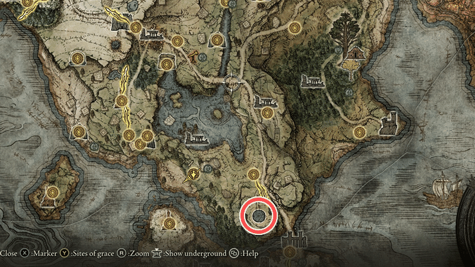
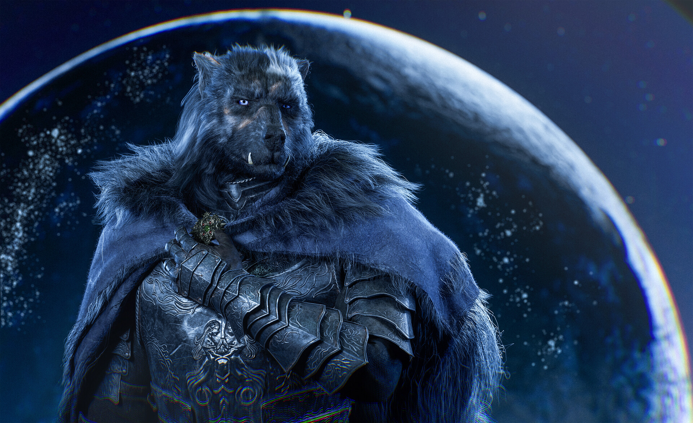
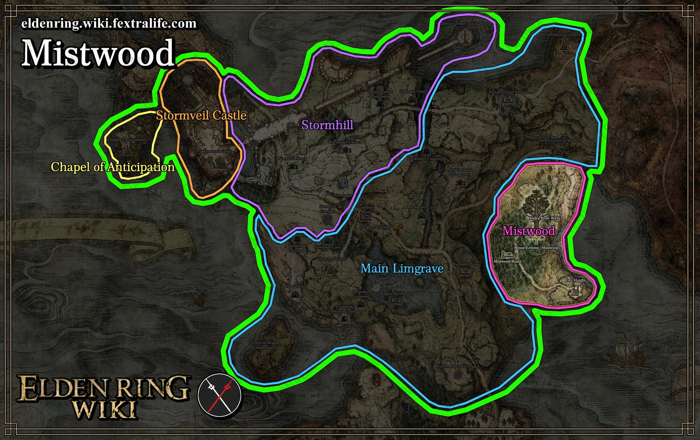
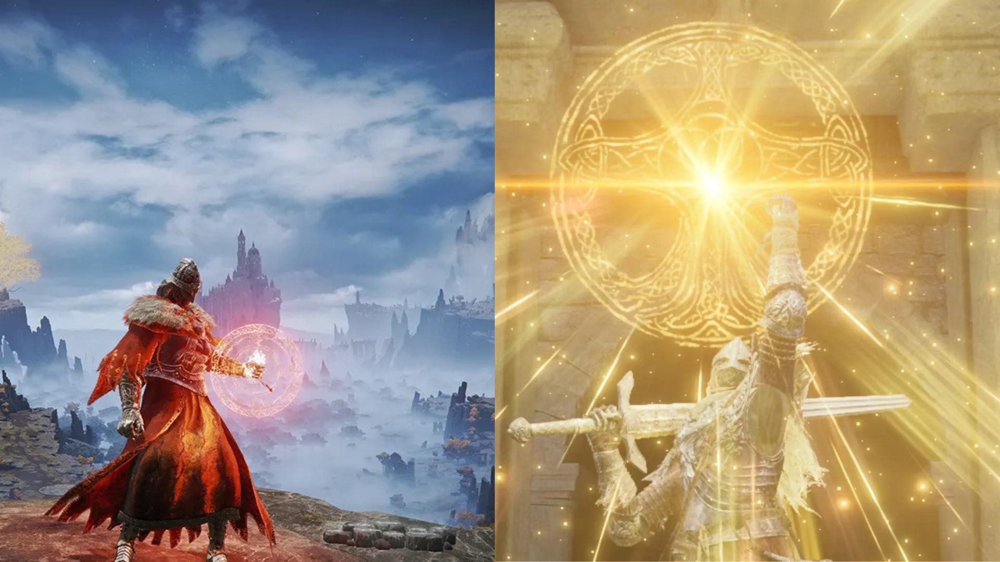

Where to Find The Bloodhound Fang; and its Lore.
In southern Limgrave, there is an Evergaol called "Forlorn hound" but... there's a much better approach

You can actually summon "Blaidd" and he will help assist you in the boss fight.

To unlock his sidequest you need to first go to Mistwood Ruins while awaiting a howl.

Prior to this, you will need to have purchased the "Finger Snap" gesture from Merchant Kale at the Church of Elleh.

Once you hear his howl await him dropping down , talk to him, exhaust his dialogue and then quick travel back to the Forlorn Hound Evergaol.
Dont you want to shred bosses?
